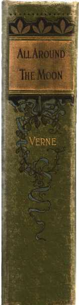
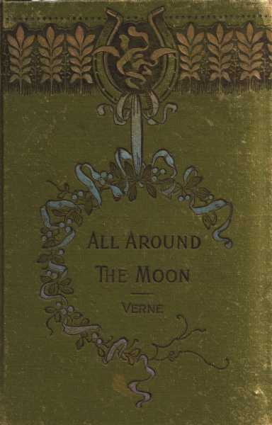

|

|

|
A few years ago the world was suddenly astounded by hearing of an experiment of a most novel and daring nature, altogether unprecedented in the annals of science. The BALTIMORE GUN CLUB, a society of artillerymen started in America during the great Civil War, had conceived the idea of nothing less than establishing direct communication with the Moon by means of a projectile! President Barbican, the originator of the enterprise, was strongly encouraged in its feasibility by the astronomers of Cambridge Observatory, and took upon himself to provide all the means necessary to secure its success. Having realized by means of a public subscription the sum of nearly five and a half millions of dollars, he immediately set himself to work at the necessary gigantic labors.
In accordance with the Cambridge men's note, the cannon intended to discharge the projectile was to be planted in some country not further than 28° north or south from the equator, so that it might be aimed vertically at the Moon in the zenith. The bullet was to be animated with an initial velocity of 12,000 yards to the second. It was to be fired off on the night of December 1st, at thirteen minutes and twenty seconds before eleven o'clock, precisely. Four days afterwards it was to hit the Moon, at the very moment that she reached her perigee, that is to say, her nearest point to the Earth, about 228,000 miles distant.
The leading members of the Club, namely President Barbican, Secretary Marston, Major Elphinstone and General Morgan, forming the executive committee, held several meetings to discuss the shape and material of the bullet, the nature and position of the cannon, and the quantity and quality of the powder. The decision soon arrived at was as follows: 1st—The bullet was to be a hollow aluminium shell, its diameter nine feet, its walls a foot in thickness, and its weight 19,250 pounds; 2nd—The cannon was to be a columbiad 900 feet in length, a well of that depth forming the vertical mould in which it was to be cast, and 3rd—The powder was to be 400 thousand pounds of gun cotton, which, by developing more than 200 thousand millions of cubic feet of gas under the projectile, would easily send it as far as our satellite.
These questions settled, Barbican, aided by Murphy, the Chief Engineer of the Cold Spring Iron Works, selected a spot in Florida, near the 27th degree north latitude, called Stony Hill, where after the performance of many wonderful feats in mining engineering, the Columbiad was successfully cast.
Things had reached this state when an incident occurred which excited the general interest a hundred fold.
A Frenchman from Paris, Michel Ardan by name, eccentric, but keen and shrewd as well as daring, demanded, by the Atlantic telegraph, permission to be enclosed in the bullet so that he might be carried to the Moon, where he was curious to make certain investigations. Received in America with great enthusiasm, Ardan held a great meeting, triumphantly carried his point, reconciled Barbican to his mortal foe, a certain Captain M'Nicholl, and even, by way of clinching the reconciliation, induced both the newly made friends to join him in his contemplated trip to the Moon.
The bullet, so modified as to become a hollow conical cylinder with plenty of room inside, was further provided with powerful water-springs and readily-ruptured partitions below the floor, intended to deaden the dreadful concussion sure to accompany the start. It was supplied with provisions for a year, water for a few months, and gas for nearly two weeks. A self-acting apparatus, of ingenious construction, kept the confined atmosphere sweet and healthy by manufacturing pure oxygen and absorbing carbonic acid. Finally, the Gun Club had constructed, at enormous expense, a gigantic telescope, which, from the summit of Long's Peak, could pursue the Projectile as it winged its way through the regions of space. Everything at last was ready.
On December 1st, at the appointed moment, in the midst of an immense concourse of spectators, the departure took place, and, for the first time in the world's history, three human beings quitted our terrestrial globe with some possibility in their favor of finally reaching a point of destination in the inter-planetary spaces. They expected to accomplish their journey in 97 hours, 13 minutes and 20 seconds, consequently reaching the Lunar surface precisely at midnight on December 5-6, the exact moment when the Moon would be full.
Unfortunately, the instantaneous explosion of such a vast quantity of gun-cotton, by giving rise to a violent commotion in the atmosphere, generated so much vapor and mist as to render the Moon invisible for several nights to the innumerable watchers in the Western Hemisphere, who vainly tried to catch sight of her.
In the meantime, J.T. Marston, the Secretary of the Gun Club, and a most devoted friend of Barbican's, had started for Long's Peak, Colorado, on the summit of which the immense telescope, already alluded to, had been erected; it was of the reflecting kind, and possessed power sufficient to bring the Moon within a distance of five miles. While Marston was prosecuting his long journey with all possible speed, Professor Belfast, who had charge of the telescope, was endeavoring to catch a glimpse of the Projectile, but for a long time with no success. The hazy, cloudy weather lasted for more than a week, to the great disgust of the public at large. People even began to fear that further observation would have to be deferred to the 3d of the following month, January, as during the latter half of December the waning Moon could not possibly give light enough to render the Projectile visible.
At last, however, to the unbounded satisfaction of all, a violent tempest suddenly cleared the sky, and on the 13th of December, shortly after midnight, the Moon, verging towards her last quarter, revealed herself sharp and bright on the dark background of the starry firmament.
That same morning, a few hours before Marston's arrival at the summit of Long's Peak, a very remarkable telegram had been dispatched by Professor Belfast to the Smithsonian Institute, Washington. It announced:
That on December 13th, at 2 o'clock in the morning, the Projectile shot from Stony Hill had been perceived by Professor Belfast and his assistants; that, deflected a little from its course by some unknown cause, it had not reached its mark, though it had approached near enough to be affected by the Lunar attraction; and that, its rectilineal motion having become circular, it should henceforth continue to describe a regular orbit around the Moon, of which in fact it had become the Satellite. The dispatch went on further to state:
That the elements of the new heavenly body had not yet been calculated, as at least three different observations, taken at different times, were necessary to determine them. The distance of the Projectile from the Lunar surface, however, might be set down roughly at roughly 2833 miles.
The dispatch concluded with the following hypotheses, positively pronounced to be the only two possible: Either, 1, The Lunar attraction would finally prevail, in which case the travellers would reach their destination; or 2, The Projectile, kept whirling forever in an immutable orbit, would go on revolving around the Moon till time should be no more.
In either alternative, what should be the lot of the daring adventurers? They had, it is true, abundant provisions to last them for some time, but even supposing that they did reach the Moon and thereby completely establish the practicability of their daring enterprise, how were they ever to get back? Could they ever get back? or ever even be heard from? Questions of this nature, freely discussed by the ablest pens of the day, kept the public mind in a very restless and excited condition.
We must be pardoned here for making a little remark which, however, astronomers and other scientific men of sanguine temperament would do well to ponder over. An observer cannot be too cautious in announcing to the public his discovery when it is of a nature purely speculative. Nobody is obliged to discover a planet, or a comet, or even a satellite, but, before announcing to the world that you have made such a discovery, first make sure that such is really the fact. Because, you know, should it afterwards come out that you have done nothing of the kind, you make yourself a butt for the stupid jokes of the lowest newspaper scribblers. Belfast had never thought of this. Impelled by his irrepressible rage for discovery—the furor inveniendi ascribed to all astronomers by Aurelius Priscus—he had therefore been guilty of an indiscretion highly un-scientific when his famous telegram, launched to the world at large from the summit of the Rocky Mountains, pronounced so dogmatically on the only possible issues of the great enterprise.
The truth was that his telegram contained two very important errors: 1. Error of observation, as facts afterwards proved; the Projectile was not seen on the 13th and could not have been on that day, so that the little black spot which Belfast professed to have seen was most certainly not the Projectile; 2. Error of theory regarding the final fate of the Projectile, since to make it become the Moon's satellite was flying in the face of one of the great fundamental laws of Theoretical Mechanics.
Only one, therefore, the first, of the hypotheses so positively announced, was capable of realization. The travellers—that is to say if they still lived—might so combine and unite their own efforts with those of the Lunar attraction as actually to succeed at last in reaching the Moon's surface.
Now the travellers, those daring but cool-headed men who knew very well what they were about, did still live, they had survived the frightful concussion of the start, and it is to the faithful record of their wonderful trip in the bullet-car, with all its singular and dramatic details, that the present volume is devoted. The story may destroy many illusions, prejudices and conjectures; but it will at least give correct ideas of the strange incidents to which such an enterprise is exposed, and it will certainly bring out in strong colors the effects of Barbican's scientific conceptions, M'Nicholl's mechanical resources, and Ardan's daring, eccentric, but brilliant and effective combinations.
Besides, it will show that J.T. Marston, their faithful friend and a man every way worthy of the friendship of such men, was only losing his time while mirroring the Moon in the speculum of the gigantic telescope on that lofty peak of the mountains.
The moment that the great clock belonging to the works at Stony Hill had struck ten, Barbican, Ardan and M'Nicholl began to take their last farewells of the numerous friends surrounding them. The two dogs intended to accompany them had been already deposited in the Projectile. The three travellers approached the mouth of the enormous cannon, seated themselves in the flying car, and once more took leave for the last time of the vast throng standing in silence around them. The windlass creaked, the car started, and the three daring men disappeared in the yawning gulf.
The trap-hole giving them ready access to the interior of the Projectile, the car soon came back empty; the great windlass was presently rolled away; the tackle and scaffolding were removed, and in a short space of time the great mouth of the Columbiad was completely rid of all obstructions.
M'Nicholl took upon himself to fasten the door of the trap on the inside by means of a powerful combination of screws and bolts of his own invention. He also covered up very carefully the glass lights with strong iron plates of extreme solidity and tightly fitting joints.
Ardan's first care was to turn on the gas, which he found burning rather low; but he lit no more than one burner, being desirous to economize as much as possible their store of light and heat, which, as he well knew, could not at the very utmost last them longer than a few weeks.
Under the cheerful blaze, the interior of the Projectile looked like a comfortable little chamber, with its circular sofa, nicely padded walls, and dome shaped ceiling.
All the articles that it contained, arms, instruments, utensils, etc., were solidly fastened to the projections of the wadding, so as to sustain the least injury possible from the first terrible shock. In fact, all precautions possible, humanly speaking, had been taken to counteract this, the first, and possibly one of the very greatest dangers to which the courageous adventurers would be exposed.
Ardan expressed himself to be quite pleased with the appearance of things in general.
"It's a prison, to be sure," said he "but not one of your ordinary prisons that always keep in the one spot. For my part, as long as I can have the privilege of looking out of the window, I am willing to lease it for a hundred years. Ah! Barbican, that brings out one of your stony smiles. You think our lease may last longer than that! Our tenement may become our coffin, eh? Be it so. I prefer it anyway to Mahomet's; it may indeed float in the air, but it won't be motionless as a milestone!"
Barbican, having made sure by personal inspection that everything was in perfect order, consulted his chronometer, which he had carefully set a short time before with Chief Engineer Murphy's, who had been charged to fire off the Projectile.
"Friends," he said, "it is now twenty minutes past ten. At 10 46' 40'', precisely, Murphy will send the electric current into the gun-cotton. We have, therefore, twenty-six minutes more to remain on earth."
"Twenty-six minutes and twenty seconds," observed Captain M'Nicholl, who always aimed at mathematical precision.
"Twenty-six minutes!" cried Ardan, gaily. "An age, a cycle, according to the use you make of them. In twenty-six minutes how much can be done! The weightiest questions of warfare, politics, morality, can be discussed, even decided, in twenty-six minutes. Twenty-six minutes well spent are infinitely more valuable than twenty-six lifetimes wasted! A few seconds even, employed by a Pascal, or a Newton, or a Barbican, or any other profoundly intellectual being
"As mad as Marston! Every bit!" muttered the Captain, half audibly.
"What do you conclude from this rigmarole of yours?" interrupted Barbican.
"I conclude that we have twenty-six good minutes still left—"
"Only twenty-four minutes, ten seconds," interrupted the Captain, watch in hand.
"Well, twenty-four minutes, Captain," Ardan went on; "now even in twenty-four minutes, I maintain—"
"Ardan," interrupted Barbican, "after a very little while we shall have plenty of time for philosophical disputations. Just now let us think of something far more pressing."
"More pressing! what do you mean? are we not fully prepared?"
"Yes, fully prepared, as far at least as we have been able to foresee. But we may still, I think, possibly increase the number of precautions to be taken against the terrible shock that we are so soon to experience."
"What? Have you any doubts whatever of the effectiveness of your brilliant and extremely original idea? Don't you think that the layers of water, regularly disposed in easily-ruptured partitions beneath this floor, will afford us sufficient protection by their elasticity?"
"I hope so, indeed, my dear friend, but I am by no means confident."
"He hopes! He is by no means confident! Listen to that, Mac! Pretty time to tell us so! Let me out of here!"
"Too late!" observed the Captain quietly. "The trap-hole alone would take ten or fifteen minutes to open."
"Oh then I suppose I must make the best of it," said Ardan, laughing. "All aboard, gentlemen! The train starts in twenty minutes!"
"In nineteen minutes and eighteen seconds," said the Captain, who never took his eye off the chronometer.
The three travellers looked at each other for a little while, during which even Ardan appeared to become serious. After another careful glance at the several objects lying around them, Barbican said, quietly:
"Everything is in its place, except ourselves. What we have now to do is to decide on the position we must take in order to neutralize the shock as much as possible. We must be particularly careful to guard against a rush of blood to the head."
"Correct!" said the Captain.
"Suppose we stood on our heads, like the circus tumblers!" cried Ardan, ready to suit the action to the word.
"Better than that," said Barbican; "we can lie on our side. Keep clearly in mind, dear friends, that at the instant of departure it makes very little difference to us whether we are inside the bullet or in front of it. There is, no doubt, some difference," he added, seeing the great eyes made by his friends, "but it is exceedingly little."
"Thank heaven for the some!" interrupted Ardan, fervently.
"Don't you approve of my suggestion, Captain?" asked Barbican.
"Certainly," was the hasty reply. "That is to say, absolutely. Seventeen minutes twenty-seven seconds!"
"Mac isn't a human being at all!" cried Ardan, admiringly. "He is a repeating chronometer, horizontal escapement, London-made lever, capped, jewelled,—"
His companions let him run on while they busied themselves in making their last arrangements, with the greatest coolness and most systematic method. In fact, I don't think of anything just now to compare them to except a couple of old travellers who, having to pass the night in the train, are trying to make themselves as comfortable as possible for their long journey. In your profound astonishment, you may naturally ask me of what strange material can the hearts of these Americans be made, who can view without the slightest semblance of a flutter the approach of the most appalling dangers? In your curiosity I fully participate, but, I'm sorry to say, I can't gratify it. It is one of those things that I could never find out.
Three mattresses, thick and well wadded, spread on the disc forming the false bottom of the Projectile, were arranged in lines whose parallelism was simply perfect. But Ardan would never think of occupying his until the very last moment. Walking up and down, with the restless nervousness of a wild beast in a cage, he kept up a continuous fire of talk; at one moment with his friends, at another with the dogs, addressing the latter by the euphonious and suggestive names of Diana and Satellite.
"Ho, pets!" he would exclaim as he patted them gently, "you must not forget the noble part you are to play up there. You must be models of canine deportment. The eyes of the whole Selenitic world will be upon you. You are the standard bearers of your race. From you they will receive their first impression regarding its merits. Let it be a favorable one. Compel those Selenites to acknowledge, in spite of themselves, that the terrestrial race of canines is far superior to that of the very best Moon dog among them!"
"Dogs in the Moon!" sneered M'Nicholl, "I like that!"
"Plenty of dogs!" cried Ardan, "and horses too, and cows, and sheep, and no end of chickens!"
"A hundred dollars to one there isn't a single chicken within the whole Lunar realm, not excluding even the invisible side!" cried the Captain, in an authoritative tone, but never taking his eye off the chronometer.
"I take that bet, my son," coolly replied Ardan, shaking the Captain's hand by way of ratifying the wager; "and this reminds me, by the way, Mac, that you have lost three bets already, to the pretty little tune of six thousand dollars."
"And paid them, too!" cried the captain, monotonously; "ten, thirty-six, six!"
"Yes, and in a quarter of an hour you will have to pay nine thousand dollars more; four thousand because the Columbiad will not burst, and five thousand because the Projectile will rise more than six miles from the Earth."
"I have the money ready," answered the Captain, touching his breeches pocket. "When I lose I pay. Not sooner. Ten, thirty-eight, ten!"
"Captain, you're a man of method, if there ever was one. I think, however, that you made a mistake in your wagers."
"How so?" asked the Captain listlessly, his eye still on the dial.
"Because, by Jove, if you win there will be no more of you left to take the money than there will be of Barbican to pay it!"
"Friend Ardan," quietly observed Barbican, "my stakes are deposited in the Wall Street Bank, of New York, with orders to pay them over to the Captain's heirs, in case the Captain himself should fail to put in an appearance at the proper time."
"Oh! you rhinoceroses, you pachyderms, you granite men!" cried Ardan, gasping with surprise; "you machines with iron heads, and iron hearts! I may admire you, but I'm blessed if I understand you!"
"Ten, forty-two, ten!" repeated M'Nicholl, as mechanically as if it was the chronometer itself that spoke.
"Four minutes and a half more," said Barbican.
"Oh! four and a half little minutes!" went on Ardan. "Only think of it! We are shut up in a bullet that lies in the chamber of a cannon nine hundred feet long. Underneath this bullet is piled a charge of 400 thousand pounds of gun-cotton, equivalent to 1600 thousand pounds of ordinary gunpowder! And at this very instant our friend Murphy, chronometer in hand, eye on dial, finger on discharger, is counting the last seconds and getting ready to launch us into the limitless regions of planetary—"
"Ardan, dear friend," interrupted Barbican, in a grave tone, "a serious moment is now at hand. Let us meet it with some interior recollection. Give me your hands, my dear friends."
"Certainly," said Ardan, with tears in his voice, and already at the other extreme of his apparent levity.
The three brave men united in one last, silent, but warm and impulsively affectionate pressure.
"And now, great God, our Creator, protect us! In Thee we trust!" prayed Barbican, the others joining him with folded hands and bowed heads.
"Ten, forty-six!" whispered the Captain, as he and Ardan quietly took their places on the mattresses.
Only forty seconds more!
Barbican rapidly extinguishes the gas and lies down beside his companions.
The deathlike silence now reigning in the Projectile is interrupted only by the sharp ticking of the chronometer as it beats the seconds.
Suddenly, a dreadful shock is felt, and the Projectile, shot up by the instantaneous development of 200,000 millions of cubic feet of gas, is flying into space with inconceivable rapidity!
What had taken place within the Projectile? What effect had been produced by the frightful concussion? Had Barbican's ingenuity been attended with a fortunate result? Had the shock been sufficiently deadened by the springs, the buffers, the water layers, and the partitions so readily ruptured? Had their combined effect succeeded in counteracting the tremendous violence of a velocity of 12,000 yards a second, actually sufficient to carry them from London to New York in six minutes? These, and a hundred other questions of a similar nature were asked that night by the millions who had been watching the explosion from the base of Stony Hill. Themselves they forgot altogether for the moment; they forgot everything in their absorbing anxiety regarding the fate of the daring travellers. Had one among them, our friend Marston, for instance, been favored with a glimpse at the interior of the projectile, what would he have seen?
Nothing at all at first, on account of the darkness; except that the walls had solidly resisted the frightful shock. Not a crack, nor a bend, nor a dent could be perceived; not even the slightest injury had the admirably constructed piece of mechanical workmanship endured. It had not yielded an inch to the enormous pressure, and, far from melting and falling back to earth, as had been so seriously apprehended, in showers of blazing aluminium, it was still as strong in every respect as it had been on the very day that it left the Cold Spring Iron Works, glittering like a silver dollar.
Of real damage there was actually none, and even the disorder into which things had been thrown in the interior by the violent shock was comparatively slight. A few small objects lying around loose had been furiously hurled against the ceiling, but the others appeared not to have suffered the slightest injury. The straps that fastened them up were unfrayed, and the fixtures that held them down were uncracked.
The partitions beneath the disc having been ruptured, and the water having escaped, the false floor had been dashed with tremendous violence against the bottom of the Projectile, and on this disc at this moment three human bodies could be seen lying perfectly still and motionless.
Were they three corpses? Had the Projectile suddenly become a great metallic coffin bearing its ghastly contents through the air with the rapidity of a lightning flash?
In a very few minutes after the shock, one of the bodies stirred a little, the arms moved, the eyes opened, the head rose and tried to look around; finally, with some difficulty, the body managed to get on its knees. It was the Frenchman! He held his head tightly squeezed between his hands for some time as if to keep it from splitting. Then he felt himself rapidly all over, cleared his throat with a vigorous "hem!" listened to the sound critically for an instant, and then said to himself in a relieved tone, but in his native tongue:
"One man all right! Call the roll for the others!"
He tried to rise, but the effort was too great for his strength. He fell back again, his brain swimming, his eyes bursting, his head splitting. His state very much resembled that of a young man waking up in the morning after his first tremendous "spree."
"Br—rr!" he muttered to himself, still talking French; "this reminds me of one of my wild nights long ago in the Quartier Latin, only decidedly more so!"
Lying quietly on his back for a while, he could soon feel that the circulation of his blood, so suddenly and violently arrested by the terrific shock, was gradually recovering its regular flow; his heart grew more normal in its action; his head became clearer, and the pain less distracting.
"Time to call that roll," he at last exclaimed in a voice with some pretensions to firmness; "Barbican! MacNicholl!"
He listens anxiously for a reply. None comes. A snow-wrapt grave at midnight is not more silent. In vain does he try to catch even the faintest sound of breathing, though he listens intently enough to hear the beating of their hearts; but he hears only his own.
"Call that roll again!" he mutters in a voice far less assured than before; "Barbican! MacNicholl!"
The same fearful unearthly stillness.
"The thing is getting decidedly monotonous!" he exclaimed, still speaking French. Then rapidly recovering his consciousness as the full horror of the situation began to break on his mind, he went on muttering audibly: "Have they really hopped the twig? Bah! Fudge! what has not been able to knock the life out of one little Frenchman can't have killed two Americans! They're all right! But first and foremost, let us enlighten the situation!"
So saying, he contrived without much difficulty to get on his feet. Balancing himself then for a moment, he began groping about for the gas. But he stopped suddenly.
"Hold on a minute!" he cried; "before lighting this match, let us see if the gas has been escaping. Setting fire to a mixture of air and hydrogen would make a pretty how-do-you-do! Such an explosion would infallibly burst the Projectile, which so far seems all right, though I'm blest if I can tell whether we're moving or not."
He began sniffing and smelling to discover if possible the odor of escaped gas. He could not detect the slightest sign of anything of the kind. This gave him great courage. He knew of course that his senses were not yet in good order, still he thought he might trust them so far as to be certain that the gas had not escaped and that consequently all the other receptacles were uninjured.
At the touch of the match, the gas burst into light and burned with a steady flame. Ardan immediately bent anxiously over the prostrate bodies of his friends. They lay on each other like inert masses, M'Nicholl stretched across Barbican.
Ardan first lifted up the Captain, laid him on the sofa, opened his clenched hands, rubbed them, and slapped the palms vigorously. Then he went all over the body carefully, kneading it, rubbing it, and gently patting it. In such intelligent efforts to restore suspended circulation, he seemed perfectly at home, and after a few minutes his patience was rewarded by seeing the Captain's pallid face gradually recover its natural color, and by feeling his heart gradually beat with a firm pulsation.
At last M'Nicholl opened his eyes, stared at Ardan for an instant, pressed his hand, looked around searchingly and anxiously, and at last whispered in a faint voice:
"How's Barbican?"
"Barbican is all right, Captain," answered Ardan quietly, but still speaking French. "I'll attend to him in a jiffy. He had to wait for his turn. I began with you because you were the top man. We'll see in a minute what we can do for dear old Barby (ce cher Barbican)!"
In less than thirty seconds more, the Captain not only was able to sit up himself, but he even insisted on helping Ardan to lift Barbican, and deposit him gently on the sofa.
The poor President had evidently suffered more from the concussion than either of his companions. As they took off his coat they were at first terribly shocked at the sight of a great patch of blood staining his shirt bosom, but they were inexpressibly relieved at finding that it proceeded from a slight contusion of the shoulder, little more than skin deep.
Every approved operation that Ardan had performed for the Captain, both now repeated for Barbican, but for a long time with nothing like a favorable result.
Ardan at first tried to encourage the Captain by whispers of a lively and hopeful nature, but not yet understanding why M'Nicholl did not deign to make a single reply, he grew reserved by degrees and at last would not speak a single word. He worked at Barbican, however, just as before.
M'Nicholl interrupted himself every moment to lay his ear on the breast of the unconscious man. At first he had shaken his head quite despondingly, but by degrees he found himself more and more encouraged to persist.
"He breathes!" he whispered at last.
"Yes, he has been breathing for some time," replied Ardan, quietly, still unconsciously speaking French. "A little more rubbing and pulling and pounding will make him as spry as a young grasshopper."
They worked at him, in fact, so vigorously, intelligently and perseveringly, that, after what they considered a long hour's labor, they had the delight of seeing the pale face assume a healthy hue, the inert limbs give signs of returning animation, and the breathing become strong and regular.
At last, Barbican suddenly opened his eyes, started into an upright position on the sofa, took his friends by the hands, and, in a voice showing complete consciousness, demanded eagerly:
"Ardan, M'Nicholl, are we moving?"
His friends looked at each other, a little amused, but more perplexed. In their anxiety regarding their own and their friend's recovery, they had never thought of asking such a question. His words recalled them at once to a full sense of their situation.
"Moving? Blessed if I can tell!" said Ardan, still speaking French.
"We may be lying fifty feet deep in a Florida marsh, for all I know," observed M'Nicholl.
"Or, likely as not, in the bottom of the Gulf of Mexico," suggested Ardan, still in French.
"Suppose we find out," observed Barbican, jumping up to try, his voice as clear and his step as firm as ever.
But trying is one thing, and finding out another. Having no means of comparing themselves with external objects, they could not possibly tell whether they were moving, or at an absolute stand-still. Though our Earth is whirling us continually around the Sun at the tremendous speed of 500 miles a minute, its inhabitants are totally unconscious of the slightest motion. It was the same with our travellers. Through their own personal consciousness they could tell absolutely nothing. Were they shooting through space like a meteor? They could not tell. Had they fallen back and buried themselves deep in the sandy soil of Florida, or, still more likely, hundreds of fathoms deep beneath the waters of the Gulf of Mexico? They could not form the slightest idea.
Listening evidently could do no good. The profound silence proved nothing. The padded walls of the Projectile were too thick to admit any sound whether of wind, water, or human beings. Barbican, however, was soon struck forcibly by one circumstance. He felt himself to be very uncomfortably warm, and his friend's faces looked very hot and flushed. Hastily removing the cover that protected the thermometer, he closely inspected it, and in an instant uttered a joyous exclamation.
"Hurrah!" he cried. "We're moving! There's no mistake about it. The thermometer marks 113 degrees Fahrenheit. Such a stifling heat could not come from the gas. It comes from the exterior walls of our projectile, which atmospheric friction must have made almost red hot. But this heat must soon diminish, because we are already far beyond the regions of the atmosphere, so that instead of smothering we shall be shortly in danger of freezing."
"What?" asked Ardan, much bewildered. "We are already far beyond the limits of the terrestrial atmosphere! Why do you think so?"
M'Nicholl was still too much flustered to venture a word.
"If you want me to answer your question satisfactorily, my dear Ardan," replied Barbican, with a quiet smile, "you will have the kindness to put your questions in English."
"What do you mean, Barbican!" asked Ardan, hardly believing his ears.
"Hurrah!" cried M'Nicholl, in the tone of a man who has suddenly made a welcome but most unexpected discovery.
"I don't know exactly how it is with the Captain," continued Barbican, with the utmost tranquillity, "but for my part the study of the languages never was my strong point, and though I always admired the French, and even understood it pretty well, I never could converse in it without giving myself more trouble than I always find it convenient to assume."
"You don't mean to say that I have been talking French to you all this time!" cried Ardan, horror-stricken.
"The most elegant French I ever heard, backed by the purest Parisian accent," replied Barbican, highly amused; "Don't you think so, Captain?" he added, turning to M'Nicholl, whose countenance still showed the most comical traces of bewilderment.
"Well, I swan to man!" cried the Captain, who always swore a little when his feelings got beyond his control; "Ardan, the Boss has got the rig on both of us this time, but rough as it is on you it is a darned sight more so on me. Be hanged if I did not think you were talking English the whole time, and I put the whole blame for not understanding you on the disordered state of my brain!"
Ardan only stared, and scratched his head, but Barbican actually—no, not laughed, that serene nature could not laugh. His cast-iron features puckered into a smile of the richest drollery, and his eyes twinkled with the wickedest fun; but no undignified giggle escaped the portal of those majestic lips.
"It sounds like French, I'd say to myself," continued the Captain, "but I know it's English, and by and by, when this whirring goes out of my head, I shall easily understand it."
Ardan now looked as if he was beginning to see the joke.
"The most puzzling part of the thing to me," went on M'Nicholl, giving his experience with the utmost gravity, "was why English sounded so like French. If it was simple incomprehensible gibberish, I could readily blame the state of my ears for it. But the idea that my bothered ears could turn a mere confused, muzzled, buzzing reverberation into a sweet, harmonious, articulate, though unintelligible, human language, made me sure that I was fast becoming crazy, if I was not so already."
"Ha! ha! ha!" roared Ardan, laughing till the tears came. "Now I understand why the poor Captain made me no reply all the time, and looked at me with such a hapless woe-begone expression of countenance. The fact is, Barbican, that shock was too much both for M'Nicholl and myself. You are the only man among us whose head is fire-proof, blast-proof, and powder-proof. I really believe a burglar would have greater difficulty in blowing your head-piece open than in bursting one of those famous American safes your papers make such a fuss about. A wonderful head, the Boss's, isn't it M'Nicholl?"
"Yes," said the Captain, as slowly as if every word were a gem of the profoundest thought, "the Boss has a fearful and a wonderful head!"
"But now to business!" cried the versatile Ardan, "Why do you think, Barbican, that we are at present beyond the limits of the terrestrial atmosphere?"
"For a very simple reason," said Barbican, pointing to the chronometer; "it is now more than seven minutes after 11. We must, therefore, have been in motion more than twenty minutes. Consequently, unless our initial velocity has been very much diminished by the friction, we must have long before this completely cleared the fifty miles of atmosphere enveloping the earth."
"Correct," said the Captain, cool as a cucumber, because once more in complete possession of all his senses; "but how much do you think the initial velocity to have been diminished by the friction?"
"By a third, according to my calculations," replied Barbican, "which I think are right. Supposing our initial velocity, therefore, to have been 12,000 yards per second, by the time we quitted the atmosphere it must have been reduced to 8,000 yards per second. At that rate, we must have gone by this time—"
"Then, Mac, my boy, you've lost your two bets!" interrupted Ardan. "The Columbiad has not burst, four thousand dollars; the Projectile has risen at least six miles, five thousand dollars; come, Captain, bleed!"
"Let me first be sure we're right," said the Captain, quietly. "I don't deny, you see, that friend Barbican's arguments are quite right, and, therefore, that I have lost my nine thousand dollars. But there is another view of the case possible, which might annul the bet."
"What other view?" asked Barbican, quickly.
"Suppose," said the Captain, very drily, "that the powder had not caught, and that we were still lying quietly at the bottom of the Columbiad!"
"By Jove!" laughed Ardan, "there's an idea truly worthy of my own nondescript brain! We must surely have changed heads during that concussion! No matter, there is some sense left in us yet. Come now, Captain, consider a little, if you can. Weren't we both half-killed by the shock? Didn't I rescue you from certain death with these two hands? Don't you see Barbican's shoulder still bleeding by the violence of the shock?"
"Correct, friend Michael, correct in every particular," replied the Captain, "But one little question."
"Out with it!"
"Friend Michael, you say we're moving?"
"Yes."
"In consequence of the explosion?"
"Certainly!"
"Which must have been attended with a tremendous report?"
"Of course!"
"Did you hear that report, friend Michael?"
"N—o," replied Ardan, a little disconcerted at the question. "Well, no; I can't say that I did hear any report."
"Did you, friend Barbican?"
"No," replied Barbican, promptly. "I heard no report whatever."
His answer was ready, but his look was quite as disconcerted as Ardan's.
"Well, friend Barbican and friend Michael," said the Captain, very drily as he leered wickedly at both, "put that and that together and tell me what you make of it."
"It's a fact!" exclaimed Barbican, puzzled, but not bewildered. "Why did we not hear that report?"
"Too hard for me," said Ardan. "Give it up!"
The three friends gazed at each other for a while with countenances expressive of much perplexity. Barbican appeared to be the least self-possessed of the party. It was a complete turning of the tables from the state of things a few moments ago. The problem was certainly simple enough, but for that very reason the more inexplicable. If they were moving the explosion must have taken place; but if the explosion had taken place, why had they not heard the report?
Barbican's decision soon put an end to speculation.
"Conjecture being useless," said he, "let us have recourse to facts. First, let us see where we are. Drop the deadlights!"
This operation, simple enough in itself and being immediately undertaken by the whole three, was easily accomplished. The screws fastening the bolts by which the external plates of the deadlights were solidly pinned, readily yielded to the pressure of a powerful wrench. The bolts were then driven outwards, and the holes which had contained them were immediately filled with solid plugs of India rubber. The bolts once driven out, the external plates dropped by their own weight, turning on a hinge, like portholes, and the strong plate-glass forming the light immediately showed itself. A second light exactly similar, could be cleared away on the opposite side of the Projectile; a third, on the summit of the dome, and a fourth, in the centre of the bottom. The travellers could thus take observations in four different directions, having an opportunity of gazing at the firmament through the side lights, and at the Earth and the Moon through the lower and the upper lights of the Projectile.
Ardan and the Captain had commenced examining the floor, previous to operating on the bottom light. But Barbican was the first to get through his work at one of the side lights, and M'Nicholl and Ardan soon heard him shouting:
"No, my friends!" he exclaimed, in tones of decided emotion; "we have not fallen back to Earth; nor are we lying in the bottom of the Gulf of Mexico. No! We are driving through space! Look at the stars glittering all around! Brighter, but smaller than we have ever seen them before! We have left the Earth and the Earth's atmosphere far behind us!"
"Hurrah! Hurrah!" cried M'Nicholl and Ardan, feeling as if electric shocks were coursing through them, though they could see nothing, looking down from the side light, but the blackest and profoundest obscurity.
Barbican soon convinced them that this pitchy blackness proved that they were not, and could not be, reposing on the surface of the Earth, where at that moment, everything was illuminated by the bright moonlight; also that they had passed the different layers of the atmosphere, where the diffused and refracted rays would be also sure to reveal themselves through the lights of the Projectile. They were, therefore, certainly moving. No doubt was longer possible.
"It's a fact!" observed the Captain, now quite convinced. "Then I've lost!"
"Let me congratulate you!" cried Ardan, shaking his hand.
"Here is your nine thousand dollars, friend Barbican," said the Captain, taking a roll of greenbacks of high denomination out of his porte-monnaie.
"You want a receipt, don't you, Captain?" asked Barbican, counting the money.
"Yes, I should prefer one, if it is not too much trouble," answered M'Nicholl; "it saves dispute."
Coolly and mechanically, as if seated at his desk, in his office, Barbican opened his memorandum book, wrote a receipt on a blank page, dated, signed and sealed it, and then handed it to the Captain, who put it away carefully among the other papers of his portfolio.
Ardan, taking off his hat, made a profound bow to both of his companions, without saying a word. Such formality, under such extraordinary circumstances, actually paralysed his tongue for the moment. No wonder that he could not understand those Americans. Even Indians would have surprised him by an exhibition of such stoicism. After indulging in silent wonder for a minute or two, he joined his companions who were now busy looking out at the starry sky.
"Where is the Moon?" he asked. "How is it that we cannot see her?"
"The fact of our not seeing her," answered Barbican, "gives me very great satisfaction in one respect; it shows that our Projectile was shot so rapidly out of the Columbiad that it had not time to be impressed with the slightest revolving motion—for us a most fortunate matter. As for the rest—see, there is Cassiopeia, a little to the left is Andromeda, further down is the great square of Pegasus, and to the southwest Fomalhaut can be easily seen swallowing the Cascade. All this shows we are looking west and consequently cannot see the Moon, which is approaching the zenith from the east. Open the other light—But hold on! Look here! What can this be?"
The three travellers, looking westwardly in the direction of Alpherat, saw a brilliant object rapidly approaching them. At a distance, it looked like a dusky moon, but the side turned towards the Earth blazed with a bright light, which every moment became more intense. It came towards them with prodigious velocity and, what was worse, its path lay so directly in the course of the Projectile that a collision seemed inevitable. As it moved onward, from west to east, they could easily see that it rotated on its axis, like all heavenly bodies; in fact, it somewhat resembled a Moon on a small scale, describing its regular orbit around the Earth.
"Mille tonerres!" cried Ardan, greatly excited; "what is that? Can it be another projectile?" M'Nicholl, wiping his spectacles, looked again, but made no reply. Barbican looked puzzled and uneasy. A collision was quite possible, and the results, even if not frightful in the highest degree, must be extremely deplorable. The Projectile, if not absolutely dashed to pieces, would be diverted from its own course and dragged along in a new one in obedience to the irresistible attraction of this furious asteroid.
Barbican fully realized that either alternative involved the complete failure of their enterprise. He kept perfectly still, but, never losing his presence of mind, he curiously looked on the approaching object with a gladiatorial eye, as if seeking to detect some unguarded point in his terrible adversary. The Captain was equally silent; he looked like a man who had fully made up his mind to regard every possible contingency with the most stoical indifference. But Ardan's tongue, more fluent than ever, rattled away incessantly.
"Look! Look!" he exclaimed, in tones so perfectly expressive of his rapidly alternating feelings as to render the medium of words totally unnecessary. "How rapidly the cursed thing is nearing us! Plague take your ugly phiz, the more I know you, the less I like you! Every second she doubles in size! Come, Madame Projectile! Stir your stumps a little livelier, old lady! He's making for you as straight as an arrow! We're going right in his way, or he's coming in ours, I can't say which. It's taking a mean advantage of us either way. As for ourselves—what can we do! Before such a monster as that we are as helpless as three men in a little skiff shooting down the rapids to the brink of Niagara! Now for it!"
Nearer and nearer it came, but without noise, without sparks, without a trail, though its lower part was brighter than ever. Its path lying little above them, the nearer it came the more the collision seemed inevitable. Imagine yourself caught on a narrow railroad bridge at midnight with an express train approaching at full speed, its reflector already dazzling you with its light, the roar of the cars rattling in your ears, and you may conceive the feelings of the travellers. At last it was so near that the travellers started back in affright, with eyes shut, hair on end, and fully believing their last hour had come. Even then Ardan had his mot.
"We can neither switch off, down brakes, nor clap on more steam! Hard luck!"
In an instant all was over. The velocity of the Projectile was fortunately great enough to carry it barely above the dangerous point; and in a flash the terrible bolide disappeared rapidly several hundred yards beneath the affrighted travellers.
"Good bye! And may you never come back!" cried Ardan, hardly able to breathe. "It's perfectly outrageous! Not room enough in infinite space to let an unpretending bullet like ours move about a little without incurring the risk of being run over by such a monster as that! What is it anyhow? Do you know, Barbican?"
"I do," was the reply.
"Of course, you do! What is it that he don't know? Eh, Captain?"
"It is a simple bolide, but one of such enormous dimensions that the Earth's attraction has made it a satellite."
"What!" cried Ardan, "another satellite besides the Moon? I hope there are no more of them!"
"They are pretty numerous," replied Barbican; "but they are so small and they move with such enormous velocity that they are very seldom seen. Petit, the Director of the Observatory of Toulouse, who these last years has devoted much time and care to the observation of bolides, has calculated that the very one we have just encountered moves with such astonishing swiftness that it accomplishes its revolution around the Earth in about 3 hours and 20 minutes!"
"Whew!" whistled Ardan, "where should we be now if it had struck us!"
"You don't mean to say, Barbican," observed M'Nicholl, "that Petit has seen this very one?"
"So it appears," replied Barbican.
"And do all astronomers admit its existence?" asked the Captain.
"Well, some of them have their doubts," replied Barbican—
"If the unbelievers had been here a minute or two ago," interrupted Ardan, "they would never express a doubt again."
"If Petit's calculation is right," continued Barbican, "I can even form a very good idea as to our distance from the Earth."
"It seems to me Barbican can do what he pleases here or elsewhere," observed Ardan to the Captain.
"Let us see, Barbican," asked M'Nicholl; "where has Petit's calculation placed us?"
"The bolide's distance being known," replied Barbican, "at the moment we met it we were a little more than 5 thousand miles from the Earth's surface."
"Five thousand miles already!" cried Ardan, "why we have only just started!"
"Let us see about that," quietly observed the Captain, looking at his chronometer, and calculating with his pencil. "It is now 10 minutes past eleven; we have therefore been 23 minutes on the road. Supposing our initial velocity of 10,000 yards or nearly seven miles a second, to have been kept up, we should by this time be about 9,000 miles from the Earth; but by allowing for friction and gravity, we can hardly be more than 5,500 miles. Yes, friend Barbican, Petit does not seem to be very wrong in his calculations."
But Barbican hardly heard the observation. He had not yet answered the puzzling question that had already presented itself to them for solution; and until he had done so he could not attend to anything else.
"That's all very well and good, Captain," he replied in an absorbed manner, "but we have not yet been able to account for a very strange phenomenon. Why didn't we hear the report?"
No one replying, the conversation came to a stand-still, and Barbican, still absorbed in his reflections, began clearing the second light of its external shutter. In a few minutes the plate dropped, and the Moon beams, flowing in, filled the interior of the Projectile with her brilliant light. The Captain immediately put out the gas, from motives of economy as well as because its glare somewhat interfered with the observation of the interplanetary regions.
The Lunar disc struck the travellers as glittering with a splendor and purity of light that they had never witnessed before. The beams, no longer strained through the misty atmosphere of the Earth, streamed copiously in through the glass and coated the interior walls of the Projectile with a brilliant silvery plating. The intense blackness of the sky enhanced the dazzling radiance of the Moon. Even the stars blazed with a new and unequalled splendor, and, in the absence of a refracting atmosphere, they flamed as bright in the close proximity of the Moon as in any other part of the sky.
You can easily conceive the interest with which these bold travellers gazed on the Starry Queen, the final object of their daring journey. She was now insensibly approaching the zenith, the mathematical point which she was to reach four days later. They presented their telescopes, but her mountains, plains, craters and general characteristics hardly came out a particle more sharply than if they had been viewed from the Earth. Still, her light, unobstructed by air or vapor, shimmered with a lustre actually transplendent. Her disc shone like a mirror of polished platins. The travellers remained for some time absorbed in the silent contemplation of the glorious scene.
"How they're gazing at her this very moment from Stony Hill!" said the Captain at last to break the silence.
"By Jove!" cried Ardan; "It's true! Captain you're right. We were near forgetting our dear old Mother, the Earth. What ungrateful children! Let me feast my eyes once more on the blessed old creature!"
Barbican, to satisfy his companion's desire, immediately commenced to clear away the disc which covered the floor of the Projectile and prevented them from getting at the lower light. This disc, though it had been dashed to the bottom of the Projectile with great violence, was still as strong as ever, and, being made in compartments fastened by screws, to dismount it was no easy matter. Barbican, however, with the help of the others, soon had it all taken apart, and put away the pieces carefully, to serve again in case of need. A round hole about a foot and a half in diameter appeared, bored through the floor of the Projectile. It was closed by a circular pane of plate-glass, which was about six inches thick, fastened by a ring of copper. Below, on the outside, the glass was protected by an aluminium plate, kept in its place by strong bolts and nuts. The latter being unscrewed, the bolts slipped out by their own weight, the shutter fell, and a new communication was established between the interior and the exterior.
Ardan knelt down, applied his eye to the light, and tried to look out. At first everything was quite dark and gloomy.
"I see no Earth!" he exclaimed at last.
"Don't you see a fine ribbon of light?" asked Barbican, "right beneath us? A thin, pale, silvery crescent?"
"Of course I do. Can that be the Earth?"
"Terra Mater herself, friend Ardan. That fine fillet of light, now hardly visible on her eastern border, will disappear altogether as soon as the Moon is full. Then, lying as she will be between the Sun and the Moon, her illuminated face will be turned away from us altogether, and for several days she will be involved in impenetrable darkness."
"And that's the Earth!" repeated Ardan, hardly able to believe his eyes, as he continued to gaze on the slight thread of silvery white light, somewhat resembling the appearance of the "Young May Moon" a few hours after sunset.
Barbican's explanation was quite correct. The Earth, in reference to the Moon or the Projectile, was in her last phase, or octant as it is called, and showed a sharp-horned, attenuated, but brilliant crescent strongly relieved by the black background of the sky. Its light, rendered a little bluish by the density of the atmospheric envelopes, was not quite as brilliant as the Moon's. But the Earth's crescent, compared to the Lunar, was of dimensions much greater, being fully 4 times larger. You would have called it a vast, beautiful, but very thin bow extending over the sky. A few points, brighter than the rest, particularly in its concave part, revealed the presence of lofty mountains, probably the Himalayahs. But they disappeared every now and then under thick vapory spots, which are never seen on the Lunar disc. They were the thin concentric cloud rings that surround the terrestrial sphere.